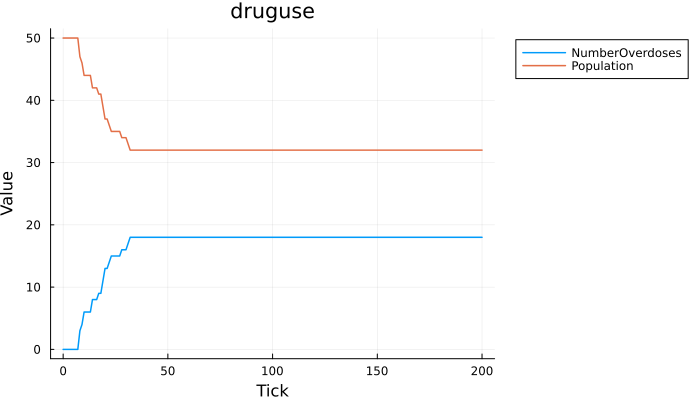
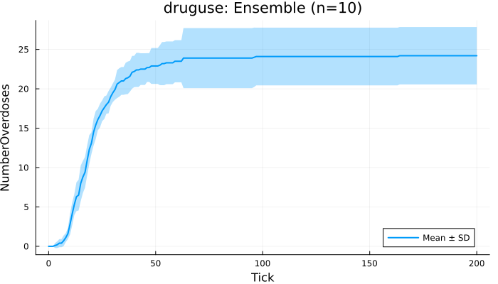
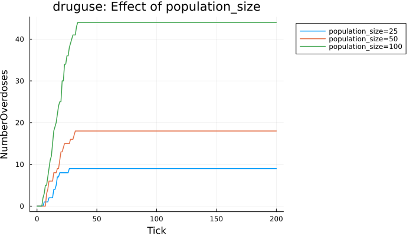

Drug Use
Overview
WHAT IS IT?
This model is trying to look at how drug use may spread through a network, as existing drug users reinforce their habits and those of others, and new drugs users are recruited by existing drug users as they are visited more than once. Thus, turtles represent people in this model.
This model also aims to look at how overdose may occur as a function of increasing drug use.
HOW IT WORKS
People start out as either drug users or not, and wander randomly around the world. Drug users also have a range of severity of their drug use, with 0 = little/none.
People may start using drugs if they run into drugs in the world, represented by red patches.
Drug users ask one of their connections to increase drug use level by a small amount at times. This could represent trying drugs, not necessarily becoming a drug user.
If drug users 1) have too high of drug use, or 2) have moderately high drug use and are also socially isolated, they overdose.
THINGS TO NOTICE
How many overdoses are there at any point? Does this increase with the overall number of drug users? Do overdoses increase with the number of drug users initially?
THINGS TO TRY
Play with the number on the sliders.
EXTENDING THE MODEL
(suggested things to add or change in the Code tab to make the model more complicated, detailed, accurate, etc.)
NETLOGO FEATURES
(interesting or unusual features of NetLogo that the model uses, particularly in the Code tab; or where workarounds were needed for missing features)
RELATED MODELS
(models in the NetLogo Models Library and elsewhere which are of related interest)
CREDITS AND REFERENCES
(a reference to the model’s URL on the web if it has one, as well as any other necessary credits, citations, and links)
Parameters
| Parameter | Type | Default | Description |
|---|---|---|---|
population_size | Int | 50 | population size |
percent_drug_user | Float64 | 20.0 | percent drug user |
drug_availability | Int | 5 | drug availability |
grid_size | Int | 33 | 33×33 grid (-16..16) |
max_ticks | Int | 200 | max ticks |
Source Code
The Julia code to run this model:
using ArkModelZoo
_, trajectory = run_druguse()Time Series

Ensemble Runs
Ten replicates with different random seeds, showing mean ± standard deviation.

Parameter Sensitivity
Varying population_size.

Appendix: Source Code
This model is implemented in the Ark.jl Entity-Component-System (ECS) framework. The code is split into five files, each with a distinct role:
- Parameters: a mutable struct holding all configurable values.
- Components: lightweight data types attached to individual entities (agents).
- Resources: world-level shared state accessible to all systems.
- Systems: functions that operate on entities each tick, defining model behavior.
- Model: wiring that assembles the world, registers resources and systems, and provides the run entry point.
Parameters (parameters.jl)
The parameter struct uses @kwdef so that every field has a default value and can be overridden by keyword. These defaults match the original NetLogo model’s slider settings.
Base.@kwdef mutable struct DrugUseParams
population_size::Int = 50
percent_drug_user::Float64 = 20.0
drug_availability::Int = 5
grid_size::Int = 33 # 33×33 grid (-16..16)
max_ticks::Int = 200
seed::Int = 42
endComponents (components.jl)
Components are lightweight data types attached to individual entities (agents). Mutable structs hold per-entity state, while empty tag structs act as markers for the ECS query system to efficiently filter entities.
mutable struct DrugPosition
x::Float64
y::Float64
end
DrugPosition() = DrugPosition(0.0, 0.0)
mutable struct DrugHeading
angle::Float64
end
DrugHeading() = DrugHeading(0.0)
mutable struct DrugState
drug_user::Bool
drug_level::Float64
unemployed::Bool
end
DrugState() = DrugState(false, 0.0, false)Resources (resources.jl)
Resources are world-level singletons shared across all systems, used for global state and aggregate statistics.
mutable struct DrugGrid
width::Int
height::Int
drug_sites::Matrix{Bool} # true = red patch (drug site)
end
function DrugGrid(w::Int, h::Int)
DrugGrid(w, h, falses(w, h))
end
mutable struct DrugNetwork
neighbors::Dict{Entity, Vector{Entity}}
end
DrugNetwork() = DrugNetwork(Dict{Entity, Vector{Entity}}())
mutable struct DrugStats
number_overdoses::Int
population::Int
end
DrugStats() = DrugStats(0, 0)Systems (systems.jl)
Systems contain the model logic and execute in a defined order each tick. Each system struct implements either initialize! (run once at setup) or update! (run every tick).
# --- Initialization ---
struct InitDrugUseSystem <: System end
function initialize!(::InitDrugUseSystem, world::World)
params = get_resource(world, DrugUseParams)
rng = get_resource(world, RNGResource).rng
grid = get_resource(world, DrugGrid)
network = get_resource(world, DrugNetwork)
stats = get_resource(world, DrugStats)
w, h = grid.width, grid.height
# Create turtles
entities = Entity[]
for _ in 1:params.population_size
x = rand(rng) * w
y = rand(rng) * h
e = new_entity!(world, (DrugPosition(x, y), DrugHeading(Float64(rand(rng, 0:359))), DrugState()))
push!(entities, e)
network.neighbors[e] = Entity[]
end
# Set initial drug users
n_drug_users = round(Int, (params.percent_drug_user / 100.0) * params.population_size)
drug_user_indices = randperm(rng, params.population_size)[1:n_drug_users]
for idx in drug_user_indices
e = entities[idx]
ds = get_components(world, e, (DrugState,))[1]
ds.drug_user = true
ds.drug_level = rand(rng) * 0.5
if ds.unemployed
ds.drug_level += 0.2
end
end
# Setup network: each turtle creates links with up to random(4) others within radius 10
for i in 1:params.population_size
e = entities[i]
pos_i = get_components(world, e, (DrugPosition,))[1]
# Find others within radius 10
nearby = Entity[]
for j in 1:params.population_size
i == j && continue
other = entities[j]
pos_j = get_components(world, other, (DrugPosition,))[1]
dx = abs(pos_i.x - pos_j.x)
dy = abs(pos_i.y - pos_j.y)
dx = min(dx, w - dx)
dy = min(dy, h - dy)
dist = sqrt(dx^2 + dy^2)
if dist <= 10.0
push!(nearby, other)
end
end
# Link with n-of (random 4) nearby
n_links = rand(rng, 0:3)
if !isempty(nearby)
n_links = min(n_links, length(nearby))
chosen = randperm(rng, length(nearby))[1:n_links]
for c in chosen
other = nearby[c]
# Undirected: add both directions
if !(other in network.neighbors[e])
push!(network.neighbors[e], other)
end
if !(e in network.neighbors[other])
push!(network.neighbors[other], e)
end
end
end
end
# Setup drug sites
total_patches = w * h
site_indices = randperm(rng, total_patches)[1:min(params.drug_availability, total_patches)]
for idx in site_indices
x = mod1(idx, w)
y = div(idx - 1, w) + 1
grid.drug_sites[x, y] = true
end
stats.population = params.population_size
stats.number_overdoses = 0
return nothing
end
# --- Movement and Drug Dynamics ---
struct DrugGoSystem <: System end
function update!(::DrugGoSystem, world::World)
params = get_resource(world, DrugUseParams)
rng = get_resource(world, RNGResource).rng
grid = get_resource(world, DrugGrid)
network = get_resource(world, DrugNetwork)
stats = get_resource(world, DrugStats)
w, h = grid.width, grid.height
to_remove = Entity[]
# Collect all entities to shuffle
all_entities = Entity[]
for (eids, _positions) in Query(world, (DrugPosition,))
append!(all_entities, eids)
end
Random.shuffle!(rng, all_entities)
for eid in all_entities
!is_alive(world, eid) && continue
pos, heading, ds = get_components(world, eid, (DrugPosition, DrugHeading, DrugState))
# Movement: rt 40, lt 10 → net +30 degrees, fd 2
heading.angle += 30.0
θ = deg2rad(heading.angle)
pos.x = mod(pos.x + 2.0 * sin(θ), Float64(w))
pos.y = mod(pos.y + 2.0 * cos(θ), Float64(h))
# start-drugs: if random 100 < drug-level and on drug site
gx = clamp(floor(Int, pos.x) + 1, 1, w)
gy = clamp(floor(Int, pos.y) + 1, 1, h)
if rand(rng, 0:99) < round(Int, ds.drug_level * 100) && grid.drug_sites[gx, gy]
ds.drug_level += 0.1
ds.drug_user = true
end
# Check threshold
if ds.drug_level > 0.5
ds.drug_user = true
end
if ds.drug_user
# increase-drug-network
nbrs = get(network.neighbors, eid, Entity[])
alive_nbrs = filter(n -> is_alive(world, n), nbrs)
if !isempty(alive_nbrs)
chosen = alive_nbrs[rand(rng, 1:length(alive_nbrs))]
if is_alive(world, chosen)
ds_chosen = get_components(world, chosen, (DrugState,))[1]
ds_chosen.drug_level += 0.1
end
end
# overdose
overdosed = false
if ds.drug_level > 0.6
# sum drug_level of link-neighbors > 1.2
nbr_sum = 0.0
for n in alive_nbrs
if is_alive(world, n)
ds_n = get_components(world, n, (DrugState,))[1]
nbr_sum += ds_n.drug_level
end
end
if nbr_sum > 1.2
stats.number_overdoses += 1
overdosed = true
end
end
if !overdosed && ds.drug_level > 2.0
stats.number_overdoses += 1
overdosed = true
end
if overdosed
push!(to_remove, eid)
end
end
end
# Remove dead agents and clean up network
for e in to_remove
if is_alive(world, e)
# Remove from neighbors' lists
nbrs = get(network.neighbors, e, Entity[])
for n in nbrs
if haskey(network.neighbors, n)
filter!(x -> x != e, network.neighbors[n])
end
end
delete!(network.neighbors, e)
remove_entity!(world, e)
end
end
# Update population count
pop = 0
for (eids, _) in Query(world, (DrugPosition,))
pop += length(eids)
end
stats.population = pop
return nothing
end
# --- Termination ---
struct DrugTerminationSystem <: System end
function update!(::DrugTerminationSystem, world::World)
params = get_resource(world, DrugUseParams)
tick = get_resource(world, Tick)
stats = get_resource(world, DrugStats)
if tick.tick + 1 >= params.max_ticks || stats.population == 0
get_resource(world, Terminate).stop = true
end
return nothing
endModel (model.jl)
The model file assembles all pieces: it creates the ECS World with the required component types, registers resources, builds the Scheduler with systems in execution order, and exposes the public run entry point. The observer pattern records the trajectory each tick.
function druguse_world(; initial_capacity::Int = 256)
return World(
DrugPosition,
DrugHeading,
DrugState;
initial_capacity = initial_capacity,
allow_mutable = true,
)
end
function druguse_systems()
return (
InitDrugUseSystem(),
DrugGoSystem(),
DrugTerminationSystem(),
)
end
function druguse_model(params::DrugUseParams = DrugUseParams())
world = druguse_world()
_add_standard_resources!(world, params)
add_resource!(world, DrugGrid(params.grid_size, params.grid_size))
add_resource!(world, DrugNetwork())
add_resource!(world, DrugStats())
scheduler = Scheduler(world, druguse_systems())
initialize!(scheduler)
return scheduler
end
struct DrugUseObserver end
function druguse_headers(::DrugUseObserver)
return ["NumberOverdoses", "Population"]
end
function druguse_values(::DrugUseObserver, world::World)
stats = get_resource(world, DrugStats)
return Float64[stats.number_overdoses, stats.population]
end
function run_druguse(; params::DrugUseParams = DrugUseParams(), observe::Bool = true)
return _run_model(druguse_model, DrugUseObserver(), druguse_values; params, observe)
end